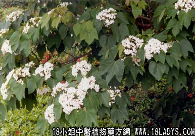

植物名：木油树（千年桐）
生长环境：本品为落叶乔木，是栽培的油料植物，亦有生于山野间。
入药部分：根。
采集期：全年。
采购地点：从药材公司购入。
性味ie：性凉、味微苦。
功能：除痰、催吐（久煎则减轻催吐作用）。
主治、用量和用法：痰火颈疬：干根1至2两，配猪瘦肉，清水适量，煎4小时服。
附录：（梧桐树果）治颈疬：干用适量，白醋少许，放在乳钵内磨研，涂患处，一日数次。
（桐油寄生）治颈疬：干用1至2两，配猪肉肉，清水适量，煎2小时服。
（方歌）痰火颈疬有单方，桐油根煎力能医，再有其果磨白醋，外搽内服保安康。
参考资料：《广东中医验方交流汇编》治胃痛方：桐油树根4～5两，煎水内服。